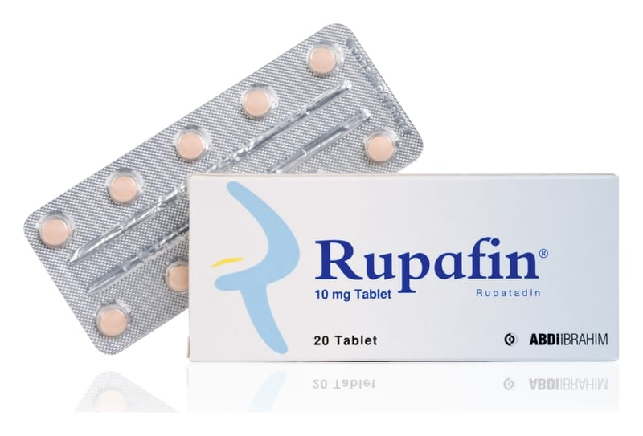

Rupafin 10 mg Tablet, 20 Adet

Ne için kullanılır
KT · Bölüm 12. RUPAFİN’i kullanmadan önce dikkat edilmesi gerekenler 3. RUPAFİN nasıl kullanılır? 4. Olası yan etkiler nelerdir? 5. RUPAFİN’ in saklanması
Başlıkları yer almaktadır.
1.RUPAFİN nedir ve ne için kullanılır ?
RUPAFİN renkli baskılı kutuda 10 mg’ lık 20 tane tablet halinde sunulan anti-allerjik bir ilaçtır. RUPAFİN etkin madde olarak rupatadin fumarat içerir. RUPAFIN 12 yaş ve üzeri hastalarda mevsimsel (aralıklı/intermitan) veya yılboyu süren (sürekli/persistan) alerjik rinitin hapşırma, burun akıntısı, göz ve burun kaşıntısı gibi belirtilerini giderir. RUPAFIN ayrıca ciltte kaşıntı, kızarıklık ve kabarıklık gibi ürtikere (alerjik bir deri döküntüsü) bağlı semptomların giderilmesinde de kullanılır.